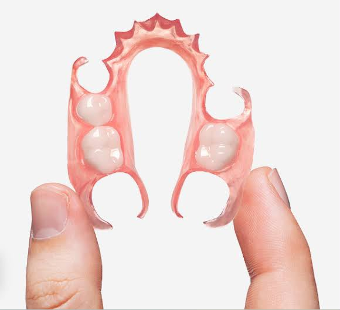
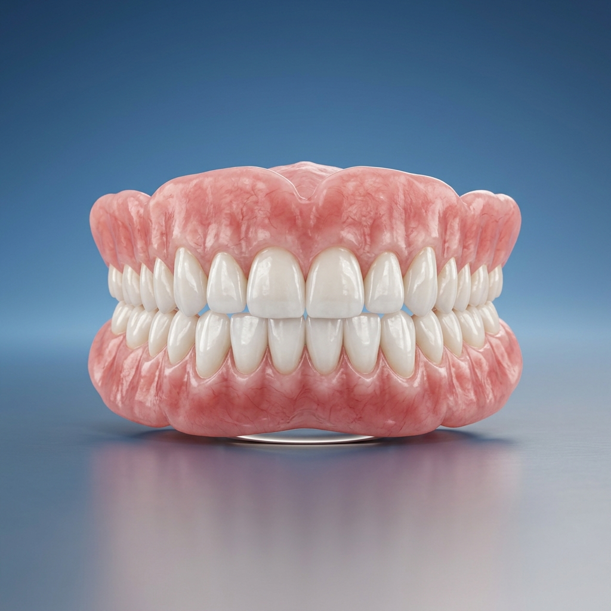
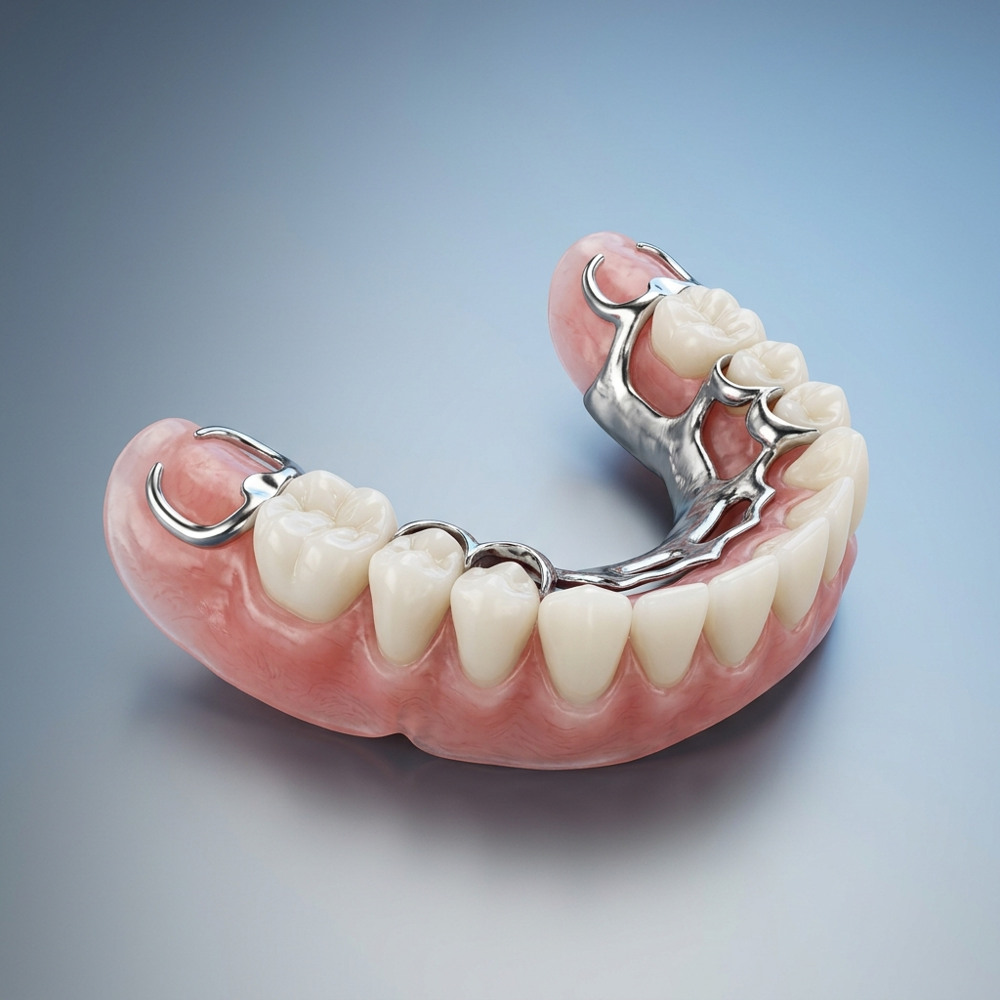
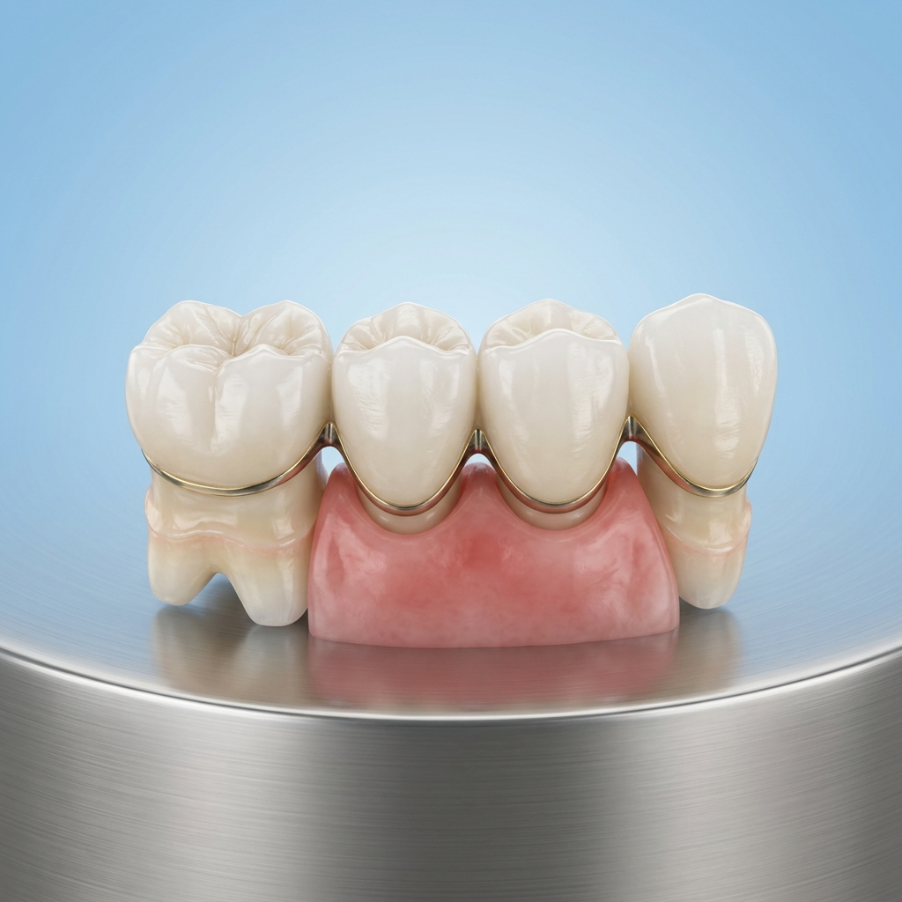

Pilihan Bahan Gigi Tiruan
Panduan lengkap memilih material gigi tiruan terbaik yang dirancang presisi untuk kenyamanan maksimal dan keindahan senyum alami Anda.
Gigi Tiruan Valplast
-
check_circle
Keunggulan: Sangat fleksibel, ringan, dan tidak menggunakan kawat logam penyangga sehingga tampak lebih natural.
-
sentiment_very_satisfied
Tingkat Kenyamanan: Sangat Tinggi. Material beradaptasi dengan baik pada gusi.
-
medical_services
Rekomendasi Kasus: Penggantian 1–4 gigi hilang, pasien alergi logam, atau yang mengutamakan estetika tinggi.

Gigi Tiruan Akrilik
-
check_circle
Keunggulan: Harga terjangkau, kokoh, dan standar industri yang mudah disesuaikan serta ditambah elemen gigi di kemudian hari.
-
sentiment_very_satisfied
Tingkat Kenyamanan: Sedang (Kaku). Menggunakan cengkeram kawat kancing logam penyangga.
-
medical_services
Rekomendasi Kasus: Pilihan ekonomis untuk banyak gigi hilang atau rahang penuh.

Kerangka Logam (Cobalt Chrome)
-
check_circle
Keunggulan: Plat logam tipis menyandarkan beban gigitan pada gigi tetangga, tidak menekan gusi secara berlebihan.
-
sentiment_very_satisfied
Tingkat Kenyamanan: Tinggi. Plat tipis tidak menutupi seluruh langit-langit mulut.
-
medical_services
Rekomendasi Kasus: Pasien yang mengutamakan ketahanan kunyah maksimal untuk makanan keras.

Crown & Bridge (Zirconia / Porcelain)
-
check_circle
Keunggulan: Mahkota gigi tiruan permanen yang disemenkan secara kuat, tidak perlu dilepas-pasang.
-
sentiment_very_satisfied
Tingkat Kenyamanan: Maksimal (Setara Gigi Asli). Sensasi rasa dan gigitan alami.
-
medical_services
Rekomendasi Kasus: Restorasi 1–3 gigi berurutan atau perbaikan mahkota gigi depan yang patah.

Matriks Perbandingan Bahan
Pilih material yang paling sesuai dengan prioritas dan gaya hidup Anda.
Valplast (Fleksibel)
Fleksibilitas:
Sangat Tinggi
Estetika:
Sangat Baik (Tanpa Kawat)
Daya Tahan Kunyah:
Sedang
Akrilik (Standard)
Fleksibilitas:
Rendah (Kaku)
Estetika:
Cukup (Kawat Terlihat)
Daya Tahan Kunyah:
Baik
Kerangka Logam
Fleksibilitas:
Rendah (Sangat Kaku)
Estetika:
Cukup (Kawat Terlihat)
Daya Tahan Kunyah:
Sangat Tinggi
Crown & Bridge (Permanen)
Fleksibilitas:
Tidak Relevan (Permanen)
Estetika:
Sangat Baik (Mirip Asli)
Daya Tahan Kunyah:
Sangat Tinggi
| Material | Fleksibilitas | Estetika | Daya Tahan Kunyah |
|---|---|---|---|
| Valplast | Sangat Tinggi | Sangat Baik (Tanpa Kawat) | Sedang |
| Akrilik | Rendah (Kaku) | Cukup (Kawat Terlihat) | Baik |
| Logam | Rendah (Sangat Kaku) | Cukup (Kawat Terlihat) | Sangat Tinggi |
| Crown/Bridge | Tidak Relevan (Permanen) | Sangat Baik (Mirip Asli) | Sangat Tinggi |